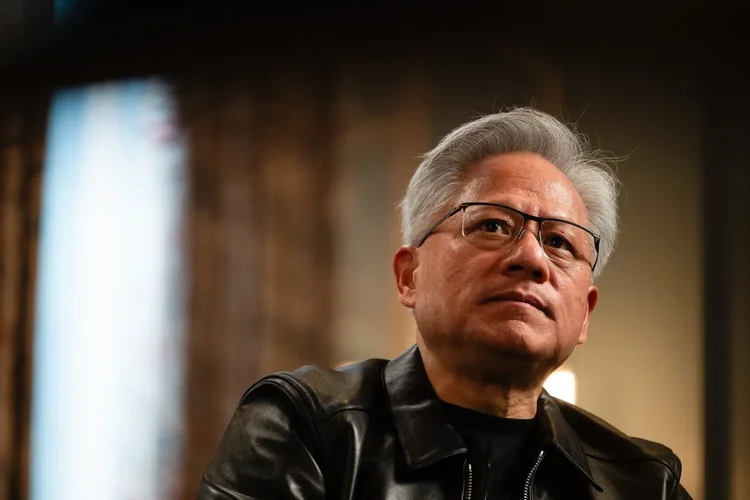

15 de novembro de 2026 O empresário Jensen Huang, cofundador e então diretor-executivo da NVIDIA, tornou-se o centro de uma das maiores polêmicas recentes do setor tecnológico. O caso envolve a admissão de uma relação extraconjugal, suspeitas de espionagem internacional, investigações internas e sua saída do comando de uma das empresas mais importantes do mundo. A crise ganhou força após reportagens revelarem que Huang mantinha uma relação próxima com Alice Huang, empresária chinesa e ex-executiva da Megaspeed International, empresa que mantinha relações comerciais com a NVIDIA. Segundo informações divulgadas pela imprensa internacional, autoridades norte-americanas suspeitavam que Alice pudesse estar transmitindo informações ao governo chinês. Até o momento, porém, não há comprovação pública de que ela atuasse como agente do governo da China. A admissão da traição Em 8 de novembro de 2026, Jensen Huang enviou uma mensagem aos funcionários da NVIDIA reconhecendo que havia sido infiel à esposa, Lori Huang. Na declaração, pediu desculpas à família e aos colaboradores da empresa, assumindo responsabilidade pelas consequências de suas atitudes. O empresário também afirmou que havia decepcionado pessoas que confiavam nele e que trabalharia para recuperar a confiança dos funcionários, acionistas e parceiros comerciais. A declaração ocorreu depois que veículos de comunicação divulgaram informações sobre sua relação com Alice Huang. Posteriormente, também surgiram reportagens sobre outros relacionamentos extraconjugais, incluindo alegações envolvendo funcionárias da própria NVIDIA. Suspeitas de espionagem e segurança nacional A situação ganhou uma dimensão internacional quando surgiram suspeitas de que Alice Huang poderia ter ligações com atividades de espionagem em benefício da China. Ela havia ocupado um cargo executivo na Megaspeed International, empresa de Singapura que negociava chips de inteligência artificial produzidos pela NVIDIA. Esses componentes são considerados estratégicos, pois podem ser utilizados no desenvolvimento de sistemas avançados de inteligência artificial e em aplicações militares. As autoridades norte-americanas investigavam suspeitas de que empresas pudessem estar ajudando a levar chips avançados à China, apesar das restrições comerciais impostas pelos Estados Unidos. A preocupação era que a proximidade entre Jensen Huang e Alice pudesse representar um risco para informações comerciais e tecnológicas da NVIDIA, além de possíveis interesses de segurança nacional. Entretanto, é importante destacar que não foi comprovado publicamente que Huang tenha compartilhado segredos empresariais ou informações confidenciais com o governo chinês. A própria NVIDIA afirmou que, até aquele momento, não possuía motivos para acreditar que seus segredos ou informações de segurança nacional tivessem sido comprometidos. O governo chinês também rejeitou as acusações de espionagem, classificando-as como infundadas. NVIDIA inicia investigação independente Diante da repercussão, o conselho de administração da NVIDIA anunciou, em 8 de novembro, uma investigação independente para examinar as informações divulgadas pela imprensa e possíveis riscos envolvendo a relação de Huang. A investigação ficou sob responsabilidade de diretores independentes da companhia, com apoio de um escritório de advocacia externo. O objetivo era avaliar se houve exposição de informações confidenciais, possíveis conflitos de interesse e se a empresa havia sido alvo de uma operação de inteligência estrangeira. A situação também chamou a atenção de parlamentares norte-americanos, que demonstraram interesse em obter esclarecimentos sobre a relação entre o empresário, a empresária chinesa e as suspeitas de espionagem. A saída de Jensen Huang do comando da empresa A crise se agravou nos dias seguintes. Em 12 de novembro de 2026, Jensen Huang deixou o cargo de diretor-executivo da NVIDIA, encerrando uma liderança de mais de três décadas na empresa que ajudou a fundar em 1993. Colette Kress, executiva responsável pelas finanças da companhia desde 2013, assumiu temporariamente o comando enquanto o conselho iniciou a busca por um substituto definitivo. A saída representou uma mudança histórica para a NVIDIA, que se tornou uma das empresas mais valiosas do mundo graças ao desenvolvimento de processadores utilizados em inteligência artificial, computadores e data centers. Consequências para a NVIDIA e o setor tecnológico O escândalo provocou questionamentos sobre a governança da NVIDIA, a segurança de suas informações e a influência de seus principais executivos em decisões estratégicas. A empresa ocupa uma posição fundamental no mercado mundial de inteligência artificial, fornecendo componentes utilizados por grandes empresas de tecnologia, centros de processamento de dados e instituições de pesquisa. Por isso, qualquer suspeita envolvendo o acesso indevido às suas tecnologias pode gerar consequências que ultrapassam os limites da própria companhia. O caso também reacendeu o debate sobre a disputa tecnológica entre Estados Unidos e China, principalmente em relação ao controle de chips avançados e ao uso da inteligência artificial em aplicações estratégicas. Até 15 de novembro de 2026, a investigação independente ainda não havia apresentado uma conclusão pública definitiva sobre possíveis vazamentos de informações ou envolvimento de agentes estrangeiros. O episódio deixa uma questão importante para o setor tecnológico: até que ponto a vida pessoal e as decisões de um executivo podem representar riscos para uma empresa que possui influência global e participa diretamente da disputa pela liderança mundial em inteligência artificial?